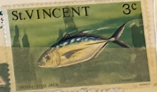
| SOURCE | TITLE| IMAGE MATCH | click to source page |
| eBay | ST. VINCENT 463 - Horse-eyed Jack "Provisional" (pa83899) | eBay | 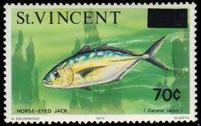 |
| eBay | St. Vincent #472-474 NH Sc CV $16.50 | eBay | 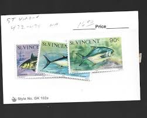 |
| zeboose.com | Saint Vincent 1976 (Variety) 70c/3c Horse-Eyed Jack with surcharge shift – ZEBOOSE.COM | 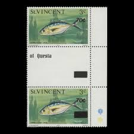 |
| Reverso | Horse mackerel - Translation into French - examples English | Reverso Context | 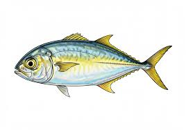 |
| Wikipedia | Vadigo - Wikipedia | 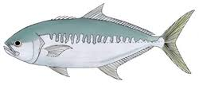 |
| Reverso | BLUE JACK - Definition & Meaning - Reverso English Dictionary | 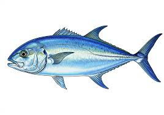 |
| Catch - Name this Fish: Can you name this common greenish to bluish jack species typically with a black spot on it's gill cover and black tips on it's tail? While this | 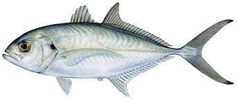 | |
| Reverso | HARDTAIL - Definition & Meaning - Reverso English Dictionary | 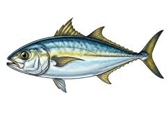 |
| Invaluable.com | Sold at Auction: Julius Bien, Bien - Runner. 9 | 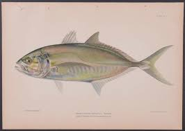 |
| Etsy | Fish Eye Frame - Etsy | 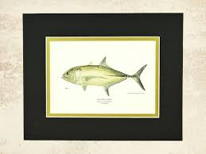 |
| Rare Fish Prints | The Fishes of Porto Rico (Puerto Rico) Prints 1900 - BALDWIN / BEIN Fish Prints 1900/ 1903 / 1906 | 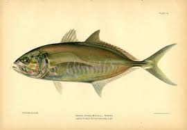 |
| eBay Australia | Togo 3418 (complete issue) unmounted mint / never hinged 2010 Fish | eBay Australia | 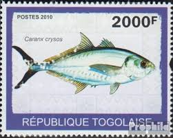 |
| HipStamp | Tuvalu ~ #730 ~ Fish ~ Used | Australia & Oceania - Tuvalu, Stamp / HipStamp | 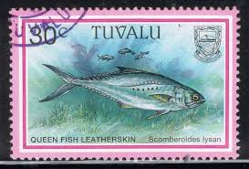 |
| eBay | Stamps St. Vincent | eBay | 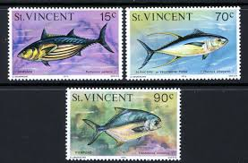 |
| unitedfashions.ae | SOLOMON ISLANDS 1893 1978 | 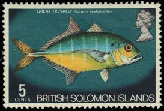 |
| Reverso | GREATER AMBERJACK - Definition & Meaning - Reverso English Dictionary | 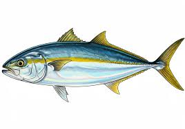 |
| eBay | 704633) Fish, Pitcairn Islands - odd value - | eBay | 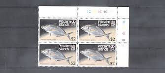 |
| Fine Art America | La Medersa school casbah Framed Print by Juan Bosco - Fine Art America | 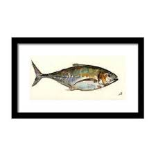 |
| Smithsonian Institution | Shorefishes of the Eastern Pacific online information system - The Fishes - Species | 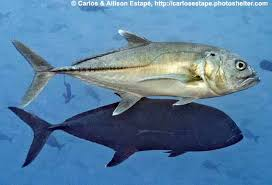 |
| eBay | BRITISH COLONIES INDIA STAMPS USED LOT 117BB | eBay | 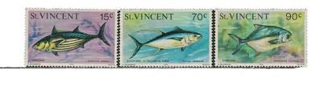 |
| eBay | Marine Animals Fish St. Vincent 448-50 I (MNH) | eBay | 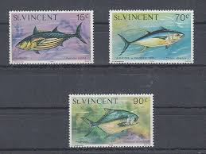 |
| SALT THERAPY BRAND | ABACHAR | ULUA "GT" - 8" STICKER | Salt Therapy Brand | 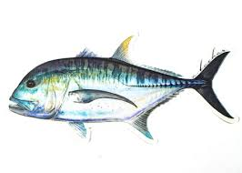 |
| MutualArt | Julius Bien | Tropical Fish Caribbean Antique Print Set (6) (Circa 1899) | MutualArt | 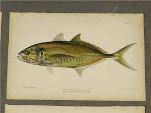 |
| Flickr | Image from page 408 of "American food and game fishes. A p… | Flickr | 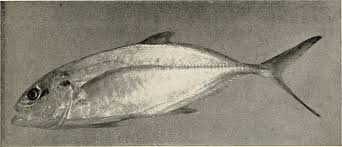 |
| Game Fish Database | 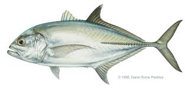 | |
| WoRMS - World Register of Marine Species | WoRMS - World Register of Marine Species - Pseudocaranx dentex (Bloch & Schneider, 1801) | 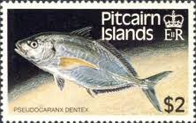 |
| eBay | 1976 FDC St. Vincent Kingstown British West Indies Queen Angel Fish Aerogram | eBay | 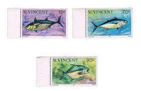 |
| WoRMS - World Register of Marine Species | African Register of Marine Species (AfReMaS) - Trachinotus ovatus (Linnaeus, 1758) | 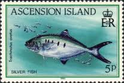 |
| stamps-plus.com | Stamps Plus | Fish | 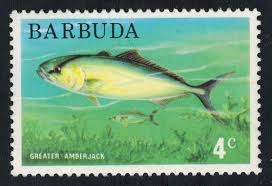 |
| eBay UK | 704633) Fish, Pitcairn Islands - odd value - | eBay UK | |
| Dreamstime.com | Vibrant Ocean Fish Species Realistic Representation Detailed Aquatic Animal Wildlife Isolated on White Background Stock Illustration - Illustration of food, ocean: 412314134 | 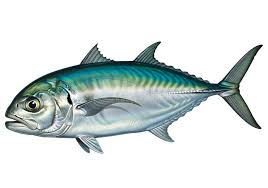 |
| Adobe | Bluefin Trevally" Images – Browse 660 Stock Photos, Vectors, and Video | Adobe Stock | 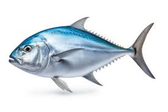 |
| BDoutdoors | Inshore - Fish ID Please .Was Caught This Today At Shelter Island Pier | Bloodydecks | 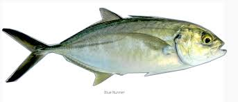 |
| eBay | St. Vincent 1976 - Mi-Nr. 448-450 I ** - MNH - Fische / Fish | eBay | 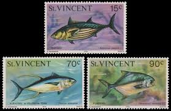 |
| eBay | Barbuda: 1 mint stamp of a set, Fish, 1974, Mi#189, MNH | eBay | 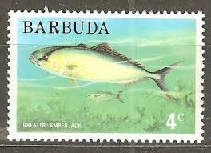 |
| WoRMS - World Register of Marine Species | WoRMS - World Register of Marine Species - Caranx sexfasciatus Quoy & Gaimard, 1825 | 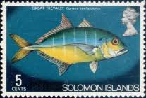 |
| Theistic finitism as an aesthetics of religious naturalism | 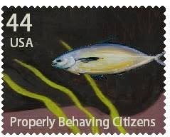 | |
| Non-toxic acrylic paint for Gyotaku art | 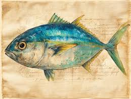 | |
| Animalia - Online Animals Encyclopedia | Leerfish - Facts, Diet, Habitat & Pictures on Animalia.bio | 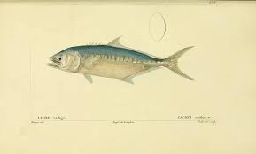 |
| Freepik | Page 3 | Watercolor mackerel fish Photos - Download Free High-Quality Pictures | Freepik | 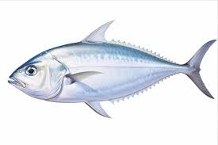 |
| Dreamstime.com | Fresh Pompano Fish and Slices on White Background Stock Illustration - Illustration of ingredient, fresh: 411440362 | 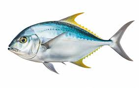 |
| eBay | British Solomon Islands 1972-73 5c Fish Theme MH Stamp | eBay | 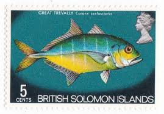 |
| eBay | Album Treasures Ascension Scott # 131 9p Elizabeth Fish Mint NH | eBay | 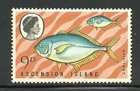 |
| Alchetron.com | Bigeye trevally - Alchetron, The Free Social Encyclopedia | 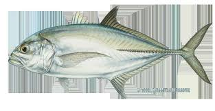 |
| Instacart | Blue Runner Fish (per lb) Delivery or Pickup Near Me - Instacart | 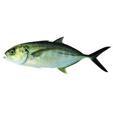 |
| Etsy | makaiimpressions - Etsy | 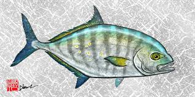 |
| Wikipedia | دردمان أصفر الذيل - ويكيبيديا | 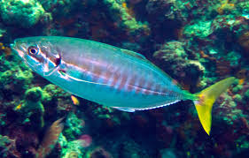 |
| FoodUniversity.com | Blue Runner | 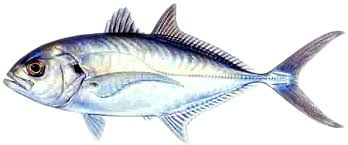 |
| tailsup.store | ULUA – Tails Up | 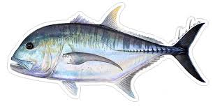 |
| Camille Engel | Animal Paintings | Camille Engel | 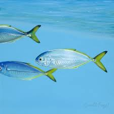 |
| ebid.net | GRENADINES, FISH, Bar Jack, green 1981, 10c on eBid United States | 190194758 | |
| Flickr | Fay Ryu | Flickr | |
| eBay | Barbuda Fauna Marine Life Greater Amberjack Fish stamp 1985 MNH B-1 | eBay | |
| Florent's Guide | Barcheek Trevally - Craterognathus plagiotaenia - Fiji - Photo 2 - Tropical Reefs | |
| Flickr | Image from page 402 of "American food and game fishes. A p… | Flickr | |
| Adobe | Seriola Lalandi" Images – Browse 854 Stock Photos, Vectors, and Video | Adobe Stock | |
| eBay | 65997] St. Vincent 1976 Marine Life Fish with year 1976 MLH | eBay | |
| Wikimedia.org | File:FMIB 42441 Carangus Ajax Snyder.jpeg - Wikimedia Commons | |
| The Philadelphia Print Shop | Denton, Sherman F. “Yellow Mackerel” – Philadelphia Print Shop |
{kind=link}